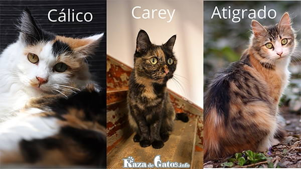

Sección 2
Gatos tricolor:

El pelaje de las gatas tricolor está representado por tres colores diferentes: negro, blanco y naranja.
No hay dos gatas tricolor iguales y son de una belleza especial que las hace dignas de una mención especial.
Sección 3
Gatos gris:
normalmente traviesos, divertidos y juguetones. Son los gatos que más gracias hacen y son muy cariñosos ante el contacto humano. Confiados y muy dulces, un gato gris será puro amor en tu casa.